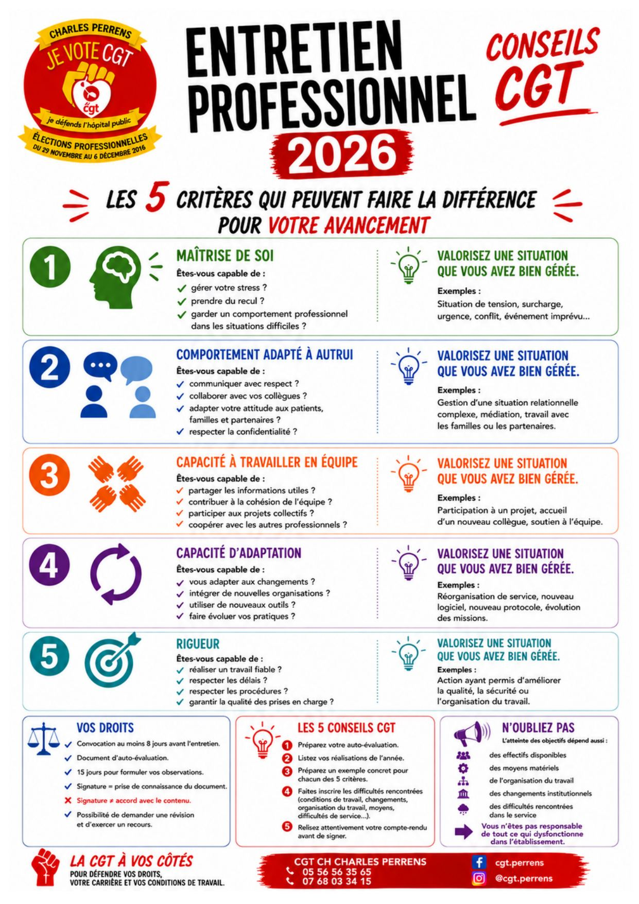

📢 Communiqué de presse — Psychiatrie : un déni honteux de la réalité
Fédération CGT Santé et Action Sociale · Commission Nationale de Psychiatrie · 9 juin 2026
Depuis 30 ans, rapports, expertises et comités de suivi se sont multipliés sur la psychiatrie, dont le seul effet aura été de détruire la psychiatrie publique et de secteur — transformée en un grand marché de la santé mentale ouvert aux opérateurs privés lucratifs.
Le service public de psychiatrie a été démembré par la multiplication d'équipes mobiles, de projets soi-disant innovants, la disparition de formations spécifiques et un nouveau mode de financement.
Alors que le Ministère feint de s'intéresser à la prise en charge des enfants et des adolescents, la Fédération rappelle que les lits de pédopsychiatrie de la Fondation Vallée ont été fermés du jour au lendemain, que la pédopsychiatrie du CH Camille Claudel est en grand danger, que celle de l'Yonne est sinistrée, que 48 postes sont menacés à St Egrève, et que partout en France les listes d'attente s'allongent dans les CMPEA.
Pour la Fédération, les annonces ministérielles (enveloppe de 65 millions d'euros, dispositifs coupe-file, objectif « zéro contention » d'ici 2030) sont un affront supplémentaire aux professionnels et aux patients de psychiatrie, face à une réalité catastrophique que la ministre continue d'ignorer.

📋 Entretien professionnel 2026 : les 5 critères qui font la différence
Pour votre avancement, l'entretien évalue 5 critères — pour chacun, valorisez une situation concrète que vous avez bien gérée :
1. Maîtrise de soi : gérer son stress, prendre du recul, garder un comportement professionnel dans les situations difficiles (tension, surcharge, urgence, conflit).
2. Comportement adapté à autrui : communiquer avec respect, collaborer avec ses collègues, adapter son attitude aux patients et familles, respecter la confidentialité.
3. Capacité à travailler en équipe : partager les informations utiles, contribuer à la cohésion, participer aux projets collectifs, coopérer avec les autres professionnels.
4. Capacité d'adaptation : s'adapter aux changements, intégrer de nouvelles organisations, utiliser de nouveaux outils, faire évoluer ses pratiques.
5. Rigueur : réaliser un travail fiable, respecter les délais et les procédures, garantir la qualité des prises en charge.
Vos droits : convocation au moins 8 jours avant l'entretien, document d'auto-évaluation, 15 jours pour formuler vos observations. Signer ne veut pas dire être d'accord avec le contenu — vous pouvez demander une révision et exercer un recours.
Les 5 conseils CGT : préparez votre auto-évaluation, listez vos réalisations de l'année, préparez un exemple concret par critère, faites inscrire les difficultés rencontrées (conditions de travail, moyens, organisation), relisez attentivement votre compte-rendu avant de signer. Rappel : l'atteinte des objectifs dépend aussi des effectifs, des moyens et de l'organisation — vous n'êtes pas responsable de tout ce qui dysfonctionne dans l'établissement.
🎬 Un peu d'histoire : le rôle de la CGT dans la création du festival de Cannes
Né en 1946 comme contre-festival antifasciste, le festival de Cannes doit beaucoup à des ouvriers CGT. En 1939, une première édition avortée avait été montée en réaction au festival de cinéma de Venise, alors récupéré par les régimes fasciste et nazi qui y récompensaient leur propre propagande.
Des techniciens et ouvriers du spectacle, syndiqués à la CGT, ont participé à la construction matérielle des premières éditions du festival — décors, installations, logistique — à une époque où le cinéma français se reconstruisait après-guerre avec une forte présence syndicale dans ses métiers techniques.
Cet ancrage n'a rien d'anecdotique : la Fédération CGT du Spectacle siège encore aujourd'hui à son comité d'organisation, et continue de porter la voix des salariés du secteur (intermittents, techniciens, personnels d'accueil) lors de chaque édition.
Un rappel utile : les grands événements culturels reposent sur le travail, souvent invisible, de professionnels syndiqués — la CGT y défend leurs conditions de travail comme partout ailleurs.
💰 Grilles de salaires — le livret complet
Grilles indiciaires détaillées pour toutes les catégories (A, B, C), tous corps et grades de la Fonction Publique Hospitalière, publiées par la Fédération CGT Santé et Action Sociale. Ce document est volumineux (plus de 30 pages de tableaux) — il reste disponible en téléchargement plutôt qu'affiché en ligne.
Télécharger le livret →